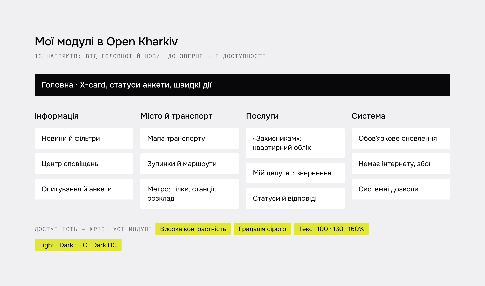
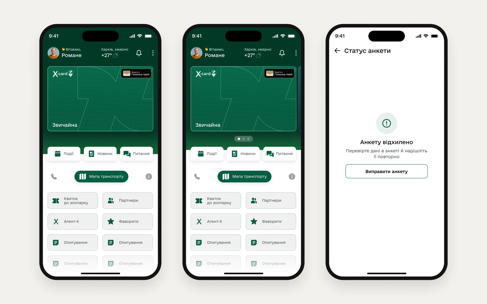
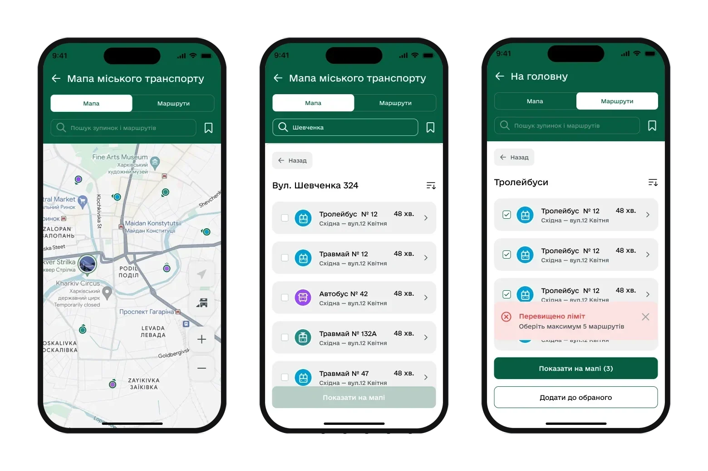
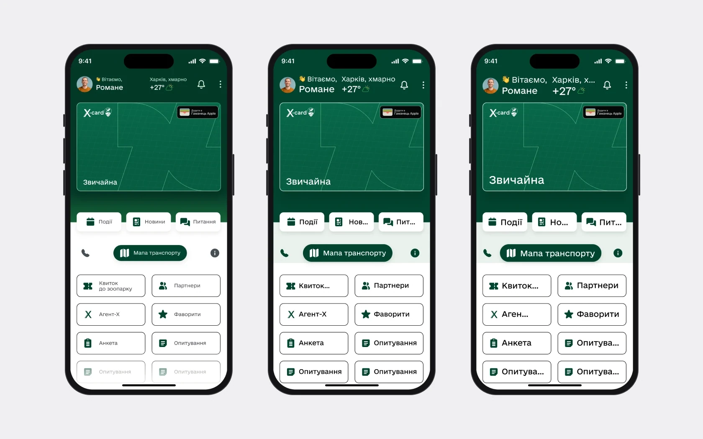
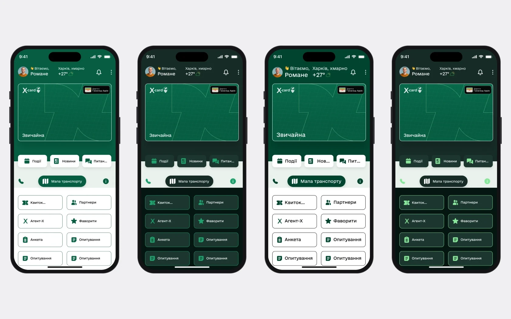

Обмеження: реліз 20 серпня разом із розробкою, досліджень користувачів не було, а розмір тексту в режимах доступності рахує розробка за формулою.
Моя роль
Флоу ми з Романом вели паралельно й правили одне одного, брендбук, іконки й анімації – його. Повністю мої: UI kit і стилі, доступність, Мапа незламності, редизайн новин, авторизації, опитувань і анкети на картку. Перші версії мап і транспорту доводили вдвох.

Головна підлаштовується під стан людини
- Чому
- Люди відкривають застосунок без акаунта, без картки харківʼянина, з карткою або з анкетою на розгляді чи відхиленою. Одна головна не підкаже кожному наступний крок.
- Що зробила
- Головна змінюється за станом: новини й «Увійти», новини, X-card і швидкі дії. Статуси анкети пояснюють, що сталося і що робити, а до кожного кроку анкети – екрани помилок.
- Результат
- Відмова в анкеті більше не тупик: людина бачить причину й наступний крок.
СтатусВпроваджено в продакшені. Даних про використання в мене немає.

Звернення з прозорими статусами
- Чому
- Людина надсилала звернення і не розуміла, що з ним, чому його не розглядають і де шукати попередні відповіді.
- Що зробила
- Зрозумілі статуси, причина, якщо звернення не підлягає розгляду, й історія проміжних і фінальних відповідей у картці звернення.
- Результат
- Уся історія звернення – в одній картці, разом із документами й оцінкою відповіді.
СтатусВпроваджено в продакшені. Даних про використання в мене немає.

Транспорт і метро
- Чому
- Назви й CTA були неочевидні, пошук і розклади потребували переробки, а кінцеві станції й виходи метро не мали своїх сценаріїв.
- Що зробила
- Нові назви й CTA, пошук, структура розкладів, сценарії для кінцевих, метро з гілками, розкладом і виходами, ліміт обраних маршрутів.
- Результат
- У метро видно напрямки, розклад буднів і вихідних та відкриті виходи, а на мапі – інклюзивний транспорт.
СтатусФлоу погодили із замовником. Розклад потім кілька разів переробляли на його запит, тестів із людьми не було.

«Захисникам»: від паперу до мобільної форми
- Чому
- Заяву на квартирний облік подавали на папері: члени сімʼї, документи, перевірка даних – усе вручну.
- Що зробила
- Форма з повторюваними блоками для членів сімʼї й документів, валідація, сформована заява, підтвердження подання й статуси.
- Результат
- Заяву подають із телефона й бачать, на якому вона етапі.
СтатусВпроваджено в продакшені. Даних про використання в мене немає.

Фільтри на одному екрані, текст, який можна читати
- Чому
- Кожен фільтр подій відкривався окремим екраном, а в погодженому дизайні заголовки були дрібні, текст сірий, і замовник просив звузити кнопки.
- Що зробила
- Усі фільтри на одному екрані, обрані видно й скасовують одним дотиком. Заголовки 26 px, текст 16 px, кнопки лишила 48 px.
- Результат
- Той самий екран фільтрів – у подіях, новинах і фаворитах.
СтатусПогоджено. Кнопки 48 px замовник прийняв після аргументації стандартами. Як це вплинуло на користування, не вимірювали.

Доступність і система
Доступність – частина системи, а не фіча наприкінці: висока контрастність, градація сірого й текст 100, 130 і 160%, картки ростуть разом із текстом. Під цим – 48 семантичних токенів у чотирьох режимах, тож тема чи контраст – це перемикання режиму, а не новий набір макетів.


- 01
Міський застосунок тримається на спільних правилах: 33 кольори з погоджених екранів я перевела в стилі, тости звела в один компонент, і новини, транспорт та звернення почали поводитися однаково.
- 02
Не все прийняли: я пропонувала опитати людей, що потрібно на головній, і полегшити її, але головна лишилася в погодженому вигляді.
- 03
Без досліджень погодження не відповідало, чи стало зручніше. Далі я б перевірила з людьми пошук транспорту, статуси звернень і інтерфейс зі збільшеним текстом.